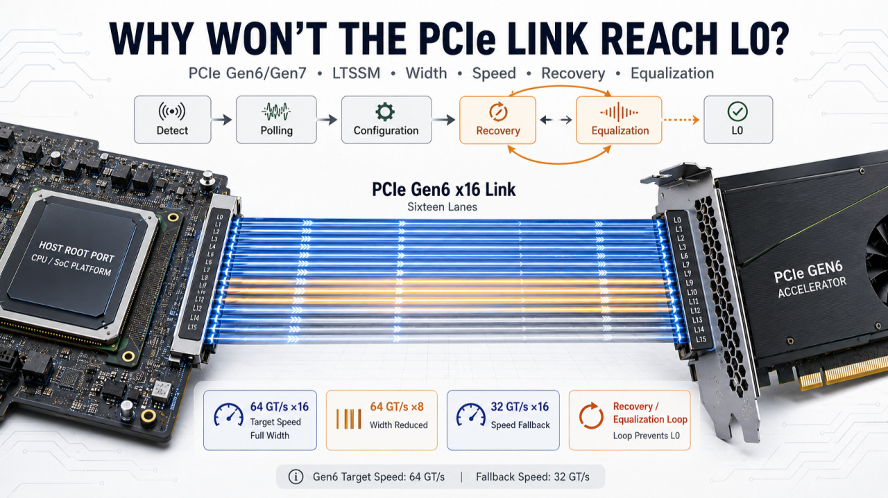
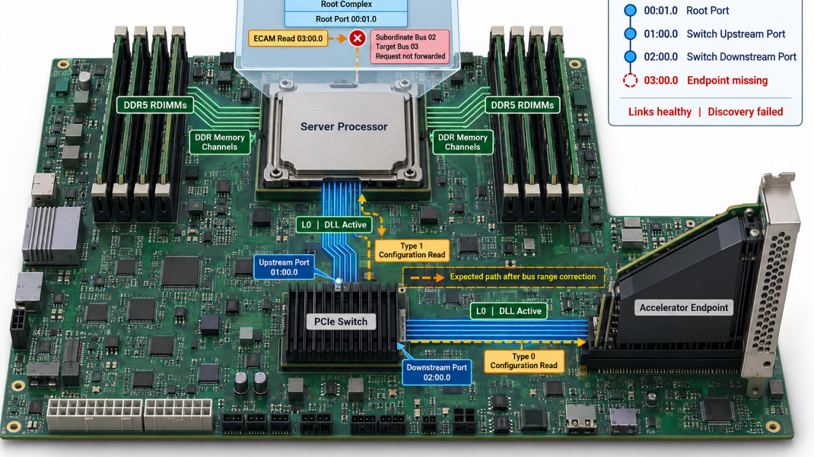

PCIE GEN6 / GEN7
Follow the complete
device journey.
Four connected parts, from the first signs of life on the link to the address map a driver needs. Read them in order or start at the boundary that is failing.

ARTICLEPART 01
What really happens before a PCIe device becomes visible to software?
Follow the system from power and reset to link training, enumeration and driver binding.
Read full article ↗
ARTICLEPART 02
Why Won’t the PCIe Link Reach L0?
Separate receiver detection, lane configuration, speed change and equalization failures.
Read full article ↗
ARTICLEPART 03
The Link Is Up. Why Is the PCIe Endpoint Still Invisible?
Trace Configuration Requests, bus numbers and discovery through the PCIe hierarchy.
Read full article ↗
ARTICLEPART 04
PCIe End point Visible but Unusable
Understand BAR sizing, address allocation, bridge windows and a usable MMIO mapping.
Read full article ↗